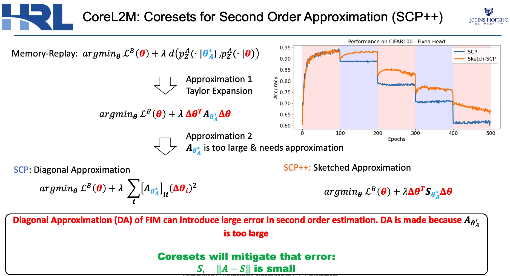
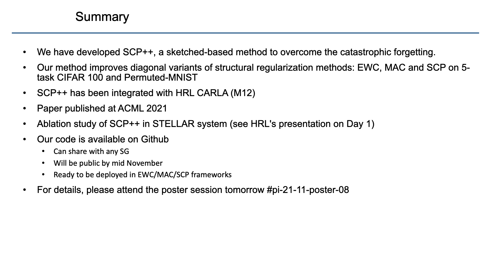

<div> <img src= "images/jhu.png" alt="jhu logo" align="right" width = "140" height= "65"> </div> <br> ###Lifelong Learning: Theory and Practice PI: Joshua T. Vogelstein, [JHU](https://www.jhu.edu/)<br> Jayanta Dey, Ali Geisa, Hayden Helm, Ronak Mehta, Will LeVine, Carey E. Priebe <br> Co-PI: Vova Braverman, [JHU](https://www.jhu.edu/) <br> Haoran Li, Aditya Krishnan, Jingfeng Wu <br> SGs: SRI, ARGONE, HRL <center>  </center> --- ### Summary .blue[Research Question :] Approach lifelong learning problem both theoretically and practically .blue[Approach :] - Introduced learning framework for theoretical analysis of lifelong learning - Introduced ensembling representations .blue[Accomplishments :] - Properly situated lifelong learning within hierarchy of learning paradigms - Achieved consistent positive forward and backward transfer in practice .blue[Key Take-Away :] Ensembling of representers is a promising approach to solve lifelong learning problem --- ### Result 1: Jovo Framework ##### In-Distribution vs Out-of-Distribution Learning  the key difference is evaluation distribution is uncoupled from data distributions --- ### Formalizing OOD Learnability  basically, using non-task data to improve performance at all  basically, using non-task data to perform arbitrarily well --- ### Result 2: Quantifying learning The above two definitions enable one to assess .ye[whether] an agent $f$ has learned, but not .ye[how much] it learned.  basically, using non-task data to improve performance over what it could achieve using only task data --- ### Learning Efficiency Applications Each of the previous definitions are all special cases of $LE^t_f(\mathbf{S}^A, \mathbf{S}^B)$, for specific choices of $\mathbf{S}^A$ and $\mathbf{S}^B$ - Learning: $\mathbf{S}^A=\mathbf{S}\_0$ and $\mathbf{S}^B=\mathbf{S}\_n$. - Transfer learning: $\mathbf{S}^A=\mathbf{S}^1$ and $\mathbf{S}^B=\mathbf{S}\_n$. - Multitask learning: for each $t$, $\mathbf{S}^A=\mathbf{S}^t$ and $\mathbf{S}^B=\mathbf{S}\_n$. - Forward learning: $\mathbf{S}^A=\mathbf{S}^t$ and $\mathbf{S}^B=\mathbf{S}^{< t}$. - Backward learning: $\mathbf{S}^A=\mathbf{S}^{< t}$ and $\mathbf{S}^B=\mathbf{S}\_n$. --- ### Weak OOD Learner Theorem Theorem 1: With *only* out-of-distribution data, there exists some problems that are weakly, but not strongly, learnable. - This implies that OOD learning is different *in kind* from in-distribution learning. - Lifelong learning is a special case of OOD learning --- ### Transfer Learning Theorem Theorem 2: Weak OOD learnability implies transfer learnability (i.e., learning efficiency > 1). That is, if one can weakly learn, one can also transfer learn, but not necessarily vice versa. - This implies that transfer learnability is a fundamental property of learning problems - In other words, inability to transfer is equivalent to inability to learn at all. --- ### Result 3: Ensembling of Representers Shows Synergistic Learning  <center> Learning Schemas </center> --- ### Omnidirectional Algorithms Show Forward Transfer for the CIFAR 10x10 Tasks - *CIFAR 100* is a popular image classification dataset with 100 classes of images. - CIFAR 10x10 breaks the 100-class task problem into 10 tasks, each with 10-class.  --- ### Omnidirectional Algorithms Uniquely Show Backward Transfer for Each CIFAR 10x10 Task  --- ### Future Directions/ Transitions - omnidirctional algorithm code continues to improve [http://proglearn.neurodata.io/](http://proglearn.neurodata.io/) - streaming forest for streaming lifelong learning setup [https://sdtf.neurodata.io](https://sdtf.neurodata.io)  --- - kernel density graph for well calibrated posteriors [https://github.com/neurodata/kdg](https://github.com/neurodata/kdg) <br> <br> <br>  <center> KDG on Guassian XOR simulation data </center> --- <br> <br> <br>  --- <br> <br> <br>  --- ### Acknowledgements <!-- <div class="small-container"> <img src="faces/ebridge.jpg"/> <div class="centered">Eric Bridgeford</div> </div> <div class="small-container"> <img src="faces/pedigo.jpg"/> <div class="centered">Ben Pedigo</div> </div> <div class="small-container"> <img src="faces/jaewon.jpg"/> <div class="centered">Jaewon Chung</div> </div> --> <div class="small-container"> <img src="faces/yummy.jpg"/> <div class="centered">yummy</div> </div> <div class="small-container"> <img src="faces/lion.jpg"/> <div class="centered">lion</div> </div> <div class="small-container"> <img src="faces/violet.jpg"/> <div class="centered">baby girl</div> </div> <div class="small-container"> <img src="faces/family.jpg"/> <div class="centered">family</div> </div> <div class="small-container"> <img src="faces/earth.jpg"/> <div class="centered">earth</div> </div> <div class="small-container"> <img src="faces/milkyway.jpg"/> <div class="centered">milkyway</div> </div> ##### JHU <div class="small-container"> <img src="faces/cep.png"/> <div class="centered">Carey Priebe</div> </div> <!-- <div class="small-container"> <img src="faces/randal.jpg"/> <div class="centered">Randal Burns</div> </div> --> <!-- <div class="small-container"> <img src="faces/cshen.jpg"/> <div class="centered">Cencheng Shen</div> </div> --> <!-- <div class="small-container"> <img src="faces/bruce_rosen.jpg"/> <div class="centered">Bruce Rosen</div> </div> <div class="small-container"> <img src="faces/kent.jpg"/> <div class="centered">Kent Kiehl</div> </div> --> <!-- <div class="small-container"> <img src="faces/mim.jpg"/> <div class="centered">Michael Miller</div> </div> <div class="small-container"> <img src="faces/dtward.jpg"/> <div class="centered">Daniel Tward</div> </div> --> <!-- <div class="small-container"> <img src="faces/vikram.jpg"/> <div class="centered">Vikram Chandrashekhar</div> </div> <div class="small-container"> <img src="faces/drishti.jpg"/> <div class="centered">Drishti Mannan</div> </div> --> <div class="small-container"> <img src="faces/jesse.jpg"/> <div class="centered">Jesse Patsolic</div> </div> <!-- <div class="small-container"> <img src="faces/falk_ben.jpg"/> <div class="centered">Benjamin Falk</div> </div> --> <!-- <div class="small-container"> <img src="faces/kwame.jpg"/> <div class="centered">Kwame Kutten</div> </div> --> <!-- <div class="small-container"> <img src="faces/perlman.jpg"/> <div class="centered">Eric Perlman</div> </div> --> <!-- <div class="small-container"> <img src="faces/loftus.jpg"/> <div class="centered">Alex Loftus</div> </div> --> <!-- <div class="small-container"> <img src="faces/bcaffo.jpg"/> <div class="centered">Brian Caffo</div> </div> --> <!-- <div class="small-container"> <img src="faces/minh.jpg"/> <div class="centered">Minh Tang</div> </div> --> <!-- <div class="small-container"> <img src="faces/avanti.jpg"/> <div class="centered">Avanti Athreya</div> </div> --> <!-- <div class="small-container"> <img src="faces/vince.jpg"/> <div class="centered">Vince Lyzinski</div> </div> --> <!-- <div class="small-container"> <img src="faces/dpmcsuss.jpg"/> <div class="centered">Daniel Sussman</div> </div> --> <!-- <div class="small-container"> <img src="faces/youngser.jpg"/> <div class="centered">Youngser Park</div> </div> --> <!-- <div class="small-container"> <img src="faces/shangsi.jpg"/> <div class="centered">Shangsi Wang</div> </div> --> <!-- <div class="small-container"> <img src="faces/tyler.jpg"/> <div class="centered">Tyler Tomita</div> </div> --> <!-- <div class="small-container"> <img src="faces/james.jpg"/> <div class="centered">James Brown</div> </div> --> <!-- <div class="small-container"> <img src="faces/disa.jpg"/> <div class="centered">Disa Mhembere</div> </div> --> <!-- <div class="small-container"> <img src="faces/gkiar.jpg"/> <div class="centered">Greg Kiar</div> </div> --> <!-- <div class="small-container"> <img src="faces/jeremias.png"/> <div class="centered">Jeremias Sulam</div> </div> --> <div class="small-container"> <img src="faces/meghana.png"/> <div class="centered">Meghana Madhya</div> </div> <!-- <div class="small-container"> <img src="faces/percy.png"/> <div class="centered">Percy Li</div> </div> --> <div class="small-container"> <img src="faces/hayden.png"/> <div class="centered">Hayden Helm</div> </div> <div class="small-container"> <img src="faces/rguo.jpg"/> <div class="centered">Richard Gou</div> </div> <div class="small-container"> <img src="faces/ronak.jpg"/> <div class="centered">Ronak Mehta</div> </div> <div class="small-container"> <img src="faces/jayanta.jpg"/> <div class="centered">Jayanta Dey</div> </div> <div class="small-container"> <img src="faces/will.jpg"/> <div class="centered">Will LeVine</div> </div> ##### Microsoft Research <div class="small-container"> <img src="faces/chwh-180x180.jpg"/> <div class="centered">Chris White</div> </div> <div class="small-container"> <img src="faces/weiwei.jpg"/> <div class="centered">Weiwei Yang</div> </div> <div class="small-container"> <img src="faces/jolarso150px.png"/> <div class="centered">Jonathan Larson</div> </div> <div class="small-container"> <img src="faces/brtower-180x180.jpg"/> <div class="centered">Bryan Tower</div> </div> ##### DARPA L2M <!-- Hava, Ben, Robert, Jennifer, Ted. --> {[BME](https://www.bme.jhu.edu/),[CIS](http://cis.jhu.edu/), [ICM](https://icm.jhu.edu/), [KNDI](http://kavlijhu.org/)}@[JHU](https://www.jhu.edu/) | [neurodata](https://neurodata.io) <br> [jovo@jhu.edu](mailto:j1c@jhu.edu) | <http://neurodata.io/talks> | [@neuro_data](https://twitter.com/neuro_data) </div> <!-- <img src="images/funding/nsf_fpo.png" STYLE="HEIGHT:95px;"/> --> <!-- <img src="images/funding/nih_fpo.png" STYLE="HEIGHT:95px;"/> --> <!-- <img src="images/funding/darpa_fpo.png" STYLE=" HEIGHT:95px;"/> --> <!-- <img src="images/funding/iarpa_fpo.jpg" STYLE="HEIGHT:95px;"/> --> <!-- <img src="images/funding/KAVLI.jpg" STYLE="HEIGHT:95px;"/> --> <!-- <img src="images/funding/schmidt.jpg" STYLE="HEIGHT:95px;"/> --> --- background-image: url(images/l_and_v.jpeg) .footnote[Questions?] --- class: middle # .center[Appendix] --- .small[ ### Publications 1. A. Geisa et al. A General Theory of the Task Learnable, 2020. 1. J. T. Vogelstein et al. [A general approach to progressive learning](https://arxiv.org/abs/2004.12908), arXiv, 2020 1. Xu, Haoyin, et al. [Streaming Decision Trees and Forests](https://arxiv.org/abs/2110.08483), arXiv, 2021 1. C. E. Priebe et al. [Modern Machine Learning: Partition and Vote](https://doi.org/10.1101/2020.04.29.068460), 2020. 1. R Guo, et al. [Estimating Information-Theoretic Quantities with Uncertainty Forests](https://arxiv.org/abs/1907.00325). arXiv, 2019. 1. R. Perry, et al. [Manifold Forests: Closing the Gap on Neural Networks](https://openreview.net/forum?id=B1xewR4KvH). arXiv, 2019. 1. C. Shen and J. T. Vogelstein. [Decision Forests Induce Characteristic Kernels](https://arxiv.org/abs/1812.00029). arXiv, 2019 1. M. Madhya, et al. [Geodesic Learning via Unsupervised Decision Forests](https://arxiv.org/abs/1907.02844). arXiv, 2019. 1. M. Madhya, et al. PACSET (Packed serialized trees): Reducing Inference Latency for Tree ensemble Deployment. submitted, 2020 ### Conferences 1. J.T. Vogelstein et al. A biological implementation of lifelong learning in the pursuit of artificial general intelligence. NAISys, 2020. 2. B. Pedigo et al. A quantitative comparison of a complete connectome to artificial intelligence architectures. NAISys, 2020. ] --- ### Biological learning is on top  --- ### Omnidirectional Algorithms can Transfer Between XOR and XNOR  --- ### Spoken Digit dataset .pull-left[ - *Spoken Digit* contains recording from 6 different speakers. - Each digit has 50 recordings (3000 total recordings). - For each recording spectrogram was extracted using using Hanning windows of duration 16 ms with an overlap of 4 ms. - The spectrograms were resized down to 28×28. ] .pull-right[ <img src="images/spectrogram.png" style="position:absolute; left:500px; width:400px;"/> ] --- ### Omnidirectional Algorithms on Spoken Digit Task